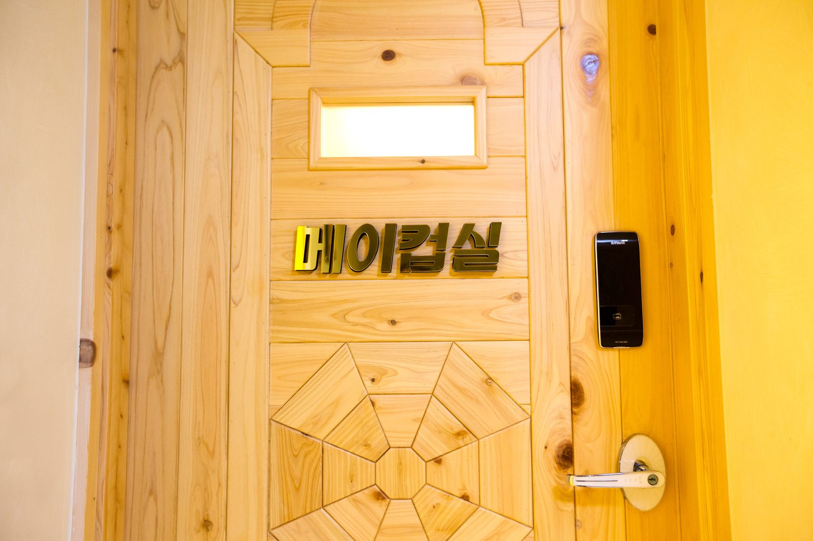
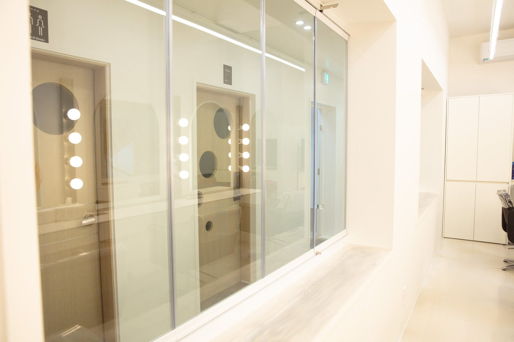
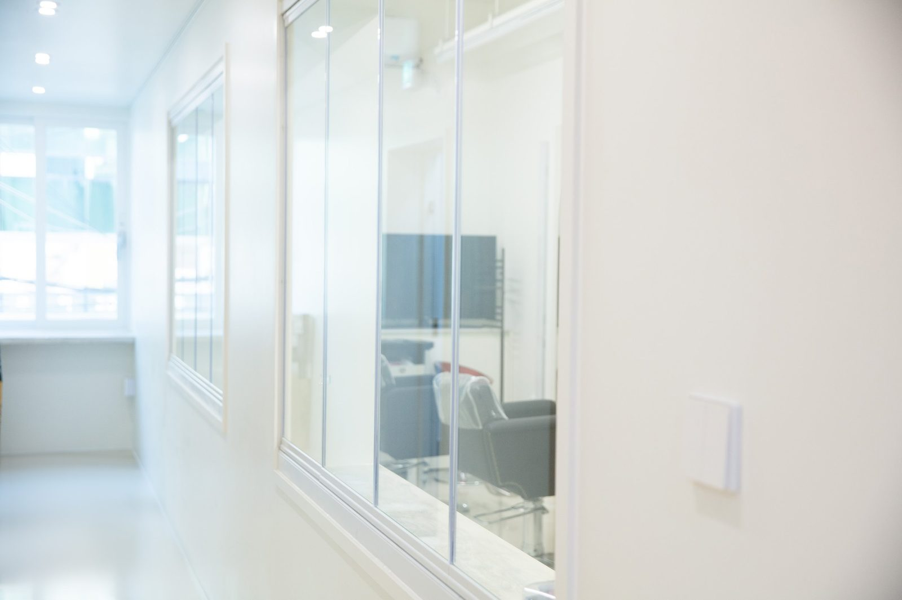

사진이 잘 나오는 비결은 카메라가 아니라 메이크업이었습니다
2026-10-17 발행
사진관에서 서른일곱 해를 보내면서, 가장 많이 들은 질문이 있습니다. “저 원래 사진에 이렇게 안 나오는데요?”
그 말을 들을 때마다 저는 카메라를 탓하지 않습니다. 대부분의 이유는 카메라가 아니라 조명과 화장에 있습니다.
집에서 보는 얼굴과 스튜디오 조명 아래의 얼굴은 다릅니다. 거실 형광등은 얼굴을 평평하게 만들고, 창가의 햇빛은 반대로 눈 밑에 그림자를 만듭니다. 그래서 집에서 거울을 보며 괜찮다고 생각한 화장이, 조명 아래에 서면 갑자기 달라 보입니다. 이건 화장을 못 해서가 아니라, 빛이 바뀌어서 생기는 일입니다.
그래서 저희 창원점에는 메이크업실이 따로 있습니다. 화장대 앞에 앉으시면 조명이 먼저 켜집니다. 촬영할 때와 똑같은 빛 아래에서 얼굴을 보시면서 화장을 하시는 겁니다. 눈썹 하나, 볼 터치 하나가 그 빛 안에서 어떻게 보이는지 바로 확인하실 수 있습니다.


화장대 위에는 붓이 종류별로 꽂혀 있고, 큰 조명과 거울이 놓여 있습니다. 낯설게 보이실 수도 있습니다. 그런데 이 도구들이 있는 이유는 단 하나입니다. 얼굴을 바꾸기 위해서가 아니라, 원래의 얼굴이 조명 아래에서 제대로 보이게 하기 위해서입니다.
특히 어머니들께 이 시간이 특별합니다. 평생 남을 챙기느라 자신을 돌볼 시간이 없었던 분들이, 화장대 앞에 앉아 처음으로 누군가에게 화장을 받아보십니다. 거울을 오래 들여다보시고, “이게 나야?” 하고 웃으십니다. 그 웃음이 사진에 담기는 순간이 저는 참 좋습니다. 그날 찍은 사진 중에서 가장 잘 나온 컷은, 대개 이 화장대 앞에서 웃으신 직후에 나옵니다.

아버지들도 마찬가지입니다. “나는 괜찮다”고 손사래를 치시다가, 머리를 정리하고 나오시면 표정이 달라집니다. 정장을 입고, 머리를 다듬고, 조명 아래에 서면 어깨가 펴집니다. 그래서 가족사진 촬영에서는 두 분 모두 메이크업을 받으시길 권해 드립니다. 한 사람만 준비가 되면 사진 안에서 그 차이가 보이기 때문입니다.
메이크업은 꾸미는 일이 아니라 준비하는 일입니다. 촬영이라는 시간을 위해 몸과 마음을 정돈하는 일이지요. 그 준비가 되어 있으면, 저는 카메라를 들고 한 걸음 물러서서 기다리기만 하면 됩니다.
칠순·팔순 가족사진을 준비하시는 분들께 한 가지만 말씀드리면, 두 분께 “이날만큼은 편하게 화장도 받고 예쁘게 나오시라”고 미리 말씀해 드리세요. 그 한마디가 그날 사진의 표정을 바꿉니다.

자주 묻는 질문
Q. 창원에서 칠순 가족사진은 언제 예약하는 게 좋을까요?
A. 생신 날짜가 정해지면 한두 달 전에 미리 말씀해 주시는 것이 좋습니다. 부모님이 편한 시간대와 옷 준비까지 함께 맞출 수 있습니다.
Q. 부모님이 사진 찍는 것을 어색해하시는데 괜찮을까요?
A. 괜찮습니다. 촬영 전 김스카페에서 따뜻한 아메리카노 한 잔으로 긴장을 푸시고, 준비가 되면 천천히 시작합니다.
Q. 멀리서 가는데 하루에 다 할 수 있을까요?
A. 의령점은 1,000평 부지에 독채 펜션을 함께 운영하고 있어, 오시는 길이 먼 가족은 하루를 여유 있게 쓰실 수 있습니다.

오시는 곳
사랑이야기창원점
- 주소 경남 창원시 성산구 원이대로 652, 상남동 롯데빌딩 2층
- 전화 055-287-8022
- 영업시간 오전 10:00 ~ 오후 7:00
- 예약 전화 상담 · 카카오톡 채널
- 주차 건물 지하 주차장
김작가사진이야기 의령
- 주소 경남 의령군 궁류면 청정로 1188
- 전화 055-574-3706
- 영업시간 오전 10:00 ~ 오후 7:00
- 예약 전화 상담 · 카카오톡 채널
- 주차 전용 주차장
이 글에 한마디
댓글창을 준비하고 있습니다. 그동안 궁금한 점은 카카오채널로 남겨 주시면 바로 답변드립니다.
카카오채널로 한마디 남기기